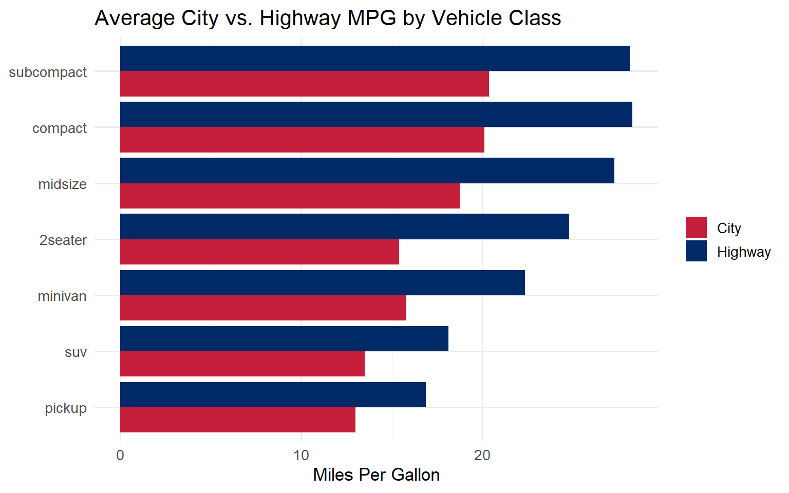
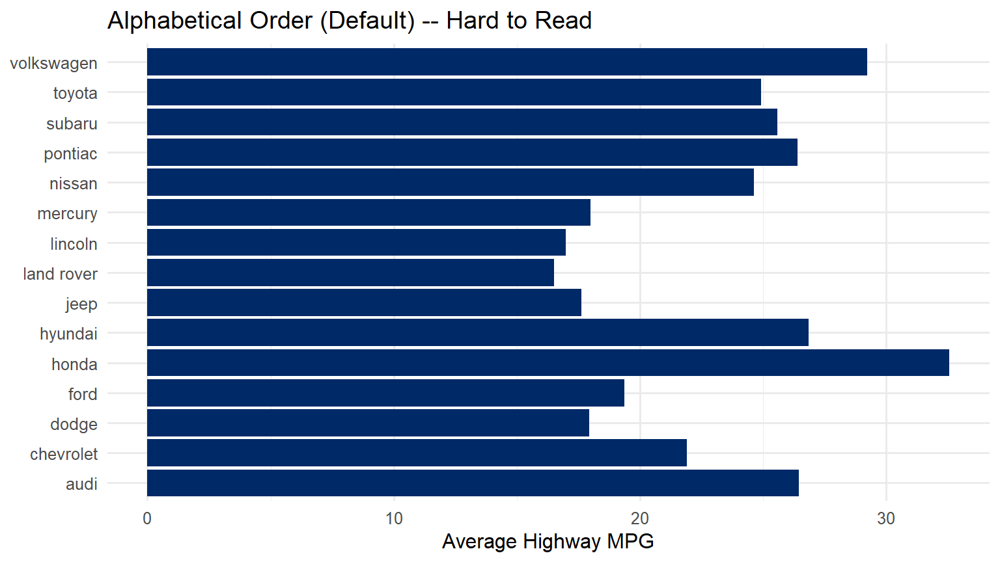
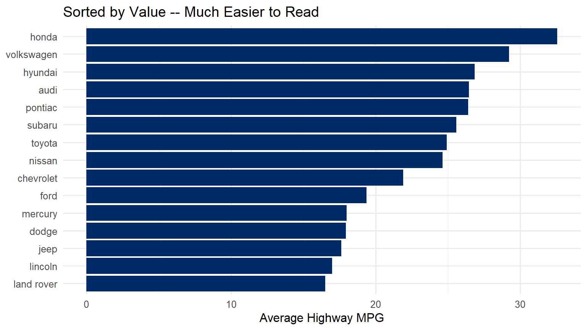
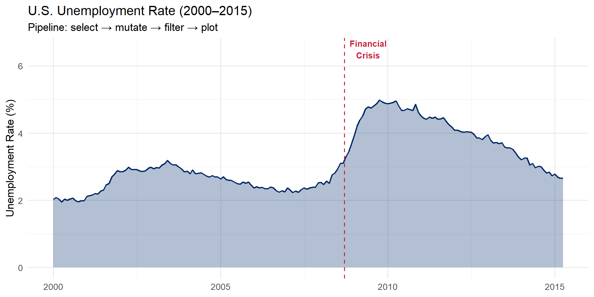

5
Data Wrangling Essentials
Tidy data, the pipe operator, and the core dplyr verbs you need for
every visualization
Learning Objectives
By the end of this week, you will be able to:
- Define tidy data and explain why it matters for ggplot2
- Use the pipe operator
%>% to chain operations into
readable pipelines
- Apply the six core dplyr verbs:
filter(),
select(), mutate(), summarise(),
group_by(), and arrange()
- Reshape wide data to long format with
pivot_longer()
- Use
fct_reorder() to control the order of categories in
your charts
- Build a complete wrangle-then-plot pipeline from start to
finish
A note about this week. This is the most technical
week of the course. Data wrangling is the bridge between having data and
being able to visualize it. If you have never written code that
transforms data before, this week may feel challenging – and that is
completely normal. Go slowly, run every code chunk one at a time, and
focus on understanding what each step does before moving to the next.
You do not need to memorize every function. You need to understand the
pattern so you can look things up when you need them.
Pre-Wrangled Data in Weeks 6–8
If data wrangling feels overwhelming this week, here is the most
important thing to know: Weeks 6, 7, and 8 will provide
pre-wrangled datasets ready for visualization. You will not
need to wrangle raw data from scratch to complete those assignments.
This week teaches you the foundations so you understand what
is happening when data gets transformed. But struggling here will
not cascade into failure on later weeks. Keep going, do
your best, and know that the safety net is in place.
1. Tidy Data
The single most important concept this week is tidy
data. The term comes from Hadley Wickham’s influential 2014
paper in the Journal of Statistical Software, and it provides
the foundation for everything we do in the tidyverse.
Tidy data follows three simple rules:
- Each variable forms a column
- Each observation forms a row
- Each type of observational unit forms a table
These rules sound straightforward, but most data you encounter in the
real world violates at least one of them. Spreadsheets designed for
human reading often spread variables across column headers, merge cells
for visual clarity, or mix multiple observational units in a single
table.
Why Does This Matter for ggplot2?
Remember from Week 4 that ggplot2 maps variables to
aesthetics. If your variable is spread across multiple
columns (like 2020, 2021, 2022 as
separate columns), you cannot map it to a single aesthetic like
x = year. Tidy data makes the mapping from data to visual
properties direct and explicit.
Here is a concrete example. Look at this “messy” (wide-format)
population data:
# Messy (wide) data — years are spread across columns
messy <- tibble(
country = c("USA", "Canada", "Mexico"),
`2020` = c(331, 38, 129),
`2021` = c(332, 38, 130),
`2022` = c(333, 39, 131)
)
messy
## # A tibble: 3 × 4
## country `2020` `2021` `2022`
## <chr> <dbl> <dbl> <dbl>
## 1 USA 331 332 333
## 2 Canada 38 38 39
## 3 Mexico 129 130 131
This looks fine to a human eye. But try mapping it to ggplot2 – what
would you put on the x-axis? There is no year column. The
years are trapped inside column names, not inside column
values.
Now let us tidy it:
# Tidy (long) data — each row is one country-year observation
tidy <- messy %>%
pivot_longer(cols = `2020`:`2022`,
names_to = "year",
values_to = "population_millions")
tidy
## # A tibble: 9 × 3
## country year population_millions
## <chr> <chr> <dbl>
## 1 USA 2020 331
## 2 USA 2021 332
## 3 USA 2022 333
## 4 Canada 2020 38
## 5 Canada 2021 38
## 6 Canada 2022 39
## 7 Mexico 2020 129
## 8 Mexico 2021 130
## 9 Mexico 2022 131
The messy data had 3 rows and 4 columns. The tidy data has 9 rows and
3 columns. Every combination of country and year is its own row, and
year and population_millions are proper
columns we can map to aesthetics.
Now we can plot it directly:
tidy %>%
mutate(year = as.integer(year)) %>%
ggplot(aes(x = year, y = population_millions, color = country)) +
geom_line(linewidth = 1.2) +
geom_point(size = 3) +
scale_color_manual(values = c("USA" = "#002967",
"Canada" = "#C41E3A",
"Mexico" = "#B4975A")) +
labs(title = "Population Growth (2020\u20132022)",
y = "Population (millions)", x = NULL, color = NULL) +
theme_minimal(base_size = 13)

Rule of thumb: If you want to map something to
color, fill, or facet but the categories are stuck in column
names rather than in a column of their own, you need
pivot_longer().
2. The Pipe Operator %>%
The pipe operator %>% is the connective tissue of
tidyverse code. Read it as “and then.” It takes the
output of the expression on its left and passes it as the first
argument to the function on its right.
Without the pipe, code reads inside-out. With the pipe, code
reads top-to-bottom like a recipe:
# Without pipe: nested, hard to read — you must read inside-out
arrange(summarise(group_by(filter(mpg, year == 2008), class), avg = mean(hwy)), desc(avg))
## # A tibble: 7 × 2
## class avg
## <chr> <dbl>
## 1 compact 28.7
## 2 midsize 28.0
## 3 subcompact 27.1
## 4 2seater 25
## 5 minivan 22.2
## 6 suv 18.6
## 7 pickup 16.9
# With pipe: clear, readable — you read top to bottom
mpg %>%
filter(year == 2008) %>%
group_by(class) %>%
summarise(avg = mean(hwy), .groups = "drop") %>%
arrange(desc(avg))
## # A tibble: 7 × 2
## class avg
## <chr> <dbl>
## 1 compact 28.7
## 2 midsize 28.0
## 3 subcompact 27.1
## 4 2seater 25
## 5 minivan 22.2
## 6 suv 18.6
## 7 pickup 16.9
Both produce the exact same result. But the piped version tells a
story: start with mpg, then filter to 2008, then group by class,
then calculate the average highway mpg, then arrange from highest to
lowest.
Think of it like giving directions:
- Without pipe: “Go to the end of the street that is
two blocks after the left turn you make after exiting the highway at
exit 4.”
- With pipe: “Take exit 4. Turn left. Go two blocks.
It is at the end of the street.”
Same destination. Very different readability.
Base R pipe |> vs. magrittr pipe
%>%: R 4.1+ introduced a native pipe operator
|>. It works similarly for most use cases. In this
course we use %>% because it is what you will encounter
in most existing tidyverse code and tutorials. Both are fine. If you see
|> in online examples, know that it does essentially the
same thing.
3. The dplyr Verbs
The dplyr package provides a small set of verbs –
functions that each do one thing well. Think of them as the building
blocks of data transformation. When you chain them together with pipes,
you can express sophisticated data transformations in clear, readable
code.
There are six verbs you need to know. Each one operates on a data
frame and returns a new data frame.
filter() |
Keeps rows that match a condition |
“Show me only the rows where…” |
select() |
Keeps (or removes) specific columns |
“I only need these columns…” |
mutate() |
Creates new columns or modifies existing ones |
“Calculate a new variable…” |
summarise() |
Collapses many rows into a summary |
“Give me the average/count/max…” |
group_by() |
Sets up groups for summarise |
“Do this separately for each…” |
arrange() |
Sorts rows |
“Put these in order by…” |
filter()
filter() selects rows based on
conditions. Only rows where the condition evaluates to TRUE
are kept. Everything else is removed.
# Keep only Toyota vehicles from 2008
mpg %>%
filter(manufacturer == "toyota", year == 2008) %>%
select(model, year, cty, hwy)
## # A tibble: 14 × 4
## model year cty hwy
## <chr> <int> <int> <int>
## 1 4runner 4wd 2008 16 20
## 2 4runner 4wd 2008 14 17
## 3 camry 2008 21 31
## 4 camry 2008 21 31
## 5 camry 2008 19 28
## 6 camry solara 2008 21 31
## 7 camry solara 2008 22 31
## 8 camry solara 2008 18 27
## 9 corolla 2008 28 37
## 10 corolla 2008 26 35
## 11 land cruiser wagon 4wd 2008 13 18
## 12 toyota tacoma 4wd 2008 17 22
## 13 toyota tacoma 4wd 2008 15 18
## 14 toyota tacoma 4wd 2008 16 20
Notice two things: we use == (double equals) to test for
equality, not = (single equals). And when we list multiple
conditions separated by commas, it means “AND” – both conditions must be
true.
Here are the most common operators you will use inside
filter():
== |
equals |
filter(year == 2008) |
!= |
not equal |
filter(class != "suv") |
>, <,
>=, <= |
comparisons |
filter(hwy > 30) |
%in% |
value is in a set |
filter(class %in% c("suv", "pickup")) |
& |
and |
filter(year == 2008 & hwy > 25) |
| |
or |
filter(class == "suv" | class == "pickup") |
is.na() |
is missing |
filter(is.na(hwy)) |
!is.na() |
is not missing |
filter(!is.na(hwy)) |
select()
select() chooses columns. It is your
tool for narrowing a wide dataset down to just the variables you need.
This makes your data easier to work with and your output easier to
read.
# Keep only specific columns
mpg %>%
select(manufacturer, model, year, hwy, cty) %>%
head(8)
## # A tibble: 8 × 5
## manufacturer model year hwy cty
## <chr> <chr> <int> <int> <int>
## 1 audi a4 1999 29 18
## 2 audi a4 1999 29 21
## 3 audi a4 2008 31 20
## 4 audi a4 2008 30 21
## 5 audi a4 1999 26 16
## 6 audi a4 1999 26 18
## 7 audi a4 2008 27 18
## 8 audi a4 quattro 1999 26 18
You can also use helper functions inside select():
starts_with("h") – all columns whose names start with
“h”ends_with("y") – all columns whose names end with
“y”contains("mpg") – all columns whose names contain
“mpg”-column_name – remove a column (keep everything
else)
mutate()
mutate() creates new columns or
modifies existing ones. The original columns are preserved; new columns
are appended to the right side of the data frame.
# Calculate average MPG and estimated annual fuel cost
mpg %>%
mutate(
avg_mpg = (cty + hwy) / 2,
fuel_cost_annual = (15000 / avg_mpg) * 3.50 # 15k miles at $3.50/gal
) %>%
select(manufacturer, model, avg_mpg, fuel_cost_annual) %>%
head(8)
## # A tibble: 8 × 4
## manufacturer model avg_mpg fuel_cost_annual
## <chr> <chr> <dbl> <dbl>
## 1 audi a4 23.5 2234.
## 2 audi a4 25 2100
## 3 audi a4 25.5 2059.
## 4 audi a4 25.5 2059.
## 5 audi a4 21 2500
## 6 audi a4 22 2386.
## 7 audi a4 22.5 2333.
## 8 audi a4 quattro 22 2386.
Think of mutate() as adding a new column to a
spreadsheet where the value in each cell is calculated from other
columns in the same row.
summarise() + group_by()
summarise() (you can also spell it
summarize()) collapses many rows into summary statistics.
On its own, it gives you a single-row summary of the entire dataset. But
when you pair it with group_by(), it computes summaries
within each group.
First, let us see summarise() without grouping:
# One summary for the entire dataset
mpg %>%
summarise(
avg_hwy = mean(hwy),
max_hwy = max(hwy),
total_cars = n()
)
## # A tibble: 1 × 3
## avg_hwy max_hwy total_cars
## <dbl> <int> <int>
## 1 23.4 44 234
Now with group_by():
# Summary statistics by vehicle class
mpg %>%
group_by(class) %>%
summarise(
n = n(),
avg_hwy = mean(hwy),
best_hwy = max(hwy),
.groups = "drop"
) %>%
arrange(desc(avg_hwy))
## # A tibble: 7 × 4
## class n avg_hwy best_hwy
## <chr> <int> <dbl> <int>
## 1 compact 47 28.3 44
## 2 subcompact 35 28.1 44
## 3 midsize 41 27.3 32
## 4 2seater 5 24.8 26
## 5 minivan 11 22.4 24
## 6 suv 62 18.1 27
## 7 pickup 33 16.9 22
Notice the .groups = "drop" argument. This tells R to
remove the grouping after summarizing, which prevents surprising
behavior in downstream operations. Always include it.
Common summary functions you can use inside
summarise():
mean(x) |
Average |
median(x) |
Median |
sd(x) |
Standard deviation |
min(x), max(x) |
Minimum, maximum |
n() |
Count of rows |
sum(x) |
Total |
arrange()
arrange() sorts rows. By default it sorts in ascending
order (smallest to largest). Wrap a column in desc() to
sort in descending order (largest to smallest).
# Rank manufacturers by average highway MPG (best to worst)
mpg %>%
group_by(manufacturer) %>%
summarise(avg_hwy = mean(hwy), .groups = "drop") %>%
arrange(desc(avg_hwy))
## # A tibble: 15 × 2
## manufacturer avg_hwy
## <chr> <dbl>
## 1 honda 32.6
## 2 volkswagen 29.2
## 3 hyundai 26.9
## 4 audi 26.4
## 5 pontiac 26.4
## 6 subaru 25.6
## 7 toyota 24.9
## 8 nissan 24.6
## 9 chevrolet 21.9
## 10 ford 19.4
## 11 mercury 18
## 12 dodge 17.9
## 13 jeep 17.6
## 14 lincoln 17
## 15 land rover 16.5
Common Errors and How to Fix Them
When you are working through this week’s code, you will almost
certainly encounter some of these errors. This is
normal. Here is a quick reference for diagnosing and fixing
them.
“Error: object ‘hwy’ not found”
Inside dplyr verbs, use bare column names (no
quotes): filter(hwy > 30), not
filter("hwy" > 30).
“Error in filter(): ! object ‘mpg’ not found”
Did you load the tidyverse? You need to run
library(tidyverse) at the top of your script before using
any dplyr functions or built-in datasets like mpg.
“Error: unexpected PIPE”
The %>% pipe must go at the end of a
line, not the start of the next line.
# WRONG — pipe at the start of a line
mpg
%>% filter(year == 2008)
# RIGHT — pipe at the end of a line
mpg %>%
filter(year == 2008)
“.groups argument” warning
This is a warning, not an error – your code still runs. But to
silence it and avoid unexpected behavior, add
.groups = "drop" inside summarise():
summarise(avg = mean(hwy), .groups = "drop")
“Column ___ doesn’t exist”
Check your spelling. R is case-sensitive.
Hwy is not the same as hwy. Use
names(mpg) or glimpse(mpg) to see the exact
column names.
pivot_longer() does not seem to work
Make sure cols = specifies which columns to pivot. If
your column names start with numbers (like 2020), you must
wrap them in backticks:
pivot_longer(cols = `2020`:`2022`,
names_to = "year",
values_to = "value")
Try It: dplyr Pipeline Builder
You have just learned the six core dplyr verbs. Now build a data
transformation pipeline interactively. The sandbox below lets you toggle
each verb on and off to see how the data changes at each step — no need
to write code.
🧪 dplyr Pipeline Builder —
Transform Data Step by Step
If the app takes a few seconds to load on first visit, that is normal
— the server is waking up.
Exploration Tasks:
- Start with no pipeline steps enabled. Look at the raw data — how
many rows and columns are there?
- Enable filter — how many rows remain? What
criterion was applied?
- Add select — which columns were kept? Why might you
drop the others?
- Toggle on mutate — what new column was created?
Examine how it was calculated.
- Finally, add arrange — does sorting reveal any
patterns you did not notice before?
What You Should Have Noticed: Each verb does one
specific thing, and the pipe (%>%) chains them together
into a readable, step-by-step transformation. The order matters —
filtering before grouping produces different results than grouping
before filtering. Building pipelines incrementally (one verb at a time)
helps you catch errors early.
AI & This Concept When asking AI to wrangle
data, describe your pipeline step by step: “Filter to rows where year
> 2000, then group by country, then compute mean GDP per capita.” AI
tools produce much cleaner dplyr code when you break the transformation
into explicit steps rather than asking for the end result all at
once.
4. Reshaping with pivot_longer()
Most data you download from the internet comes in wide
format – designed for human reading, with categories spread
across column headers. But ggplot2 needs long format –
one row per observation, with categories in their own column.
pivot_longer() converts wide data to long data. It has
three key arguments:
cols |
Which columns to pivot |
cols = c(City, Highway) or
cols =2020:2022`| |names_to| Name for the new column that will hold the old column names |names_to
=
“type”| |values_to| Name for the new column that will hold the values |values_to
= “mpg”` |
Let us walk through a complete example. We want to compare city and
highway fuel economy by vehicle class, shown side by side in a grouped
bar chart. To get two bars per class (one for city, one for highway), we
need a column that says “City” or “Highway” – which means we need to
pivot.
Step 1: Summarise the data
# Calculate average city and highway MPG by class
mpg_summary <- mpg %>%
group_by(class) %>%
summarise(
City = mean(cty),
Highway = mean(hwy),
.groups = "drop"
)
mpg_summary
## # A tibble: 7 × 3
## class City Highway
## <chr> <dbl> <dbl>
## 1 2seater 15.4 24.8
## 2 compact 20.1 28.3
## 3 midsize 18.8 27.3
## 4 minivan 15.8 22.4
## 5 pickup 13 16.9
## 6 subcompact 20.4 28.1
## 7 suv 13.5 18.1
Notice that City and Highway are separate
columns. We cannot map both to a single y-axis in ggplot2 while also
coloring by type.
Step 2: Pivot to long format
# Pivot so that "City" and "Highway" become values in a new column
mpg_long <- mpg_summary %>%
pivot_longer(
cols = c(City, Highway),
names_to = "type",
values_to = "mpg"
)
mpg_long
## # A tibble: 14 × 3
## class type mpg
## <chr> <chr> <dbl>
## 1 2seater City 15.4
## 2 2seater Highway 24.8
## 3 compact City 20.1
## 4 compact Highway 28.3
## 5 midsize City 18.8
## 6 midsize Highway 27.3
## 7 minivan City 15.8
## 8 minivan Highway 22.4
## 9 pickup City 13
## 10 pickup Highway 16.9
## 11 subcompact City 20.4
## 12 subcompact Highway 28.1
## 13 suv City 13.5
## 14 suv Highway 18.1
Now we have a type column with values “City” and
“Highway” and an mpg column with the corresponding values.
This is tidy data: each row is one class-type combination.
Step 3: Plot
ggplot(mpg_long, aes(x = fct_reorder(class, mpg), y = mpg, fill = type)) +
geom_col(position = "dodge") +
scale_fill_manual(values = c("City" = "#C41E3A", "Highway" = "#002967")) +
coord_flip() +
labs(title = "Average City vs. Highway MPG by Vehicle Class",
x = NULL, y = "Miles Per Gallon", fill = NULL) +
theme_minimal(base_size = 13)

Common pitfall: Forgetting to pivot before plotting.
If you try to map both cty and hwy to the
y-axis in a single ggplot call, you will run into trouble. The tidy
approach is always: pivot first, then map the new
category column to fill or color.
5. Controlling Chart Order with forcats
By default, ggplot2 orders categorical axes
alphabetically. This is almost never what you want. A
bar chart ordered alphabetically makes it hard to compare values because
the bars have no meaningful progression.
The forcats package (part of the tidyverse – it
loads automatically with library(tidyverse)) gives you
functions to reorder factor levels. The three most useful for
visualization:
fct_reorder(category, value) |
Reorder by another variable |
Bar charts sorted by value |
fct_infreq(category) |
Order by frequency |
Bar charts of counts |
fct_lump_n(category, n) |
Keep top n, lump rest into “Other” |
Too many categories |
The one you will use most often is fct_reorder(). Here
is the difference it makes:
# WITHOUT fct_reorder — alphabetical order (hard to compare)
mpg %>%
group_by(manufacturer) %>%
summarise(avg_hwy = mean(hwy), .groups = "drop") %>%
ggplot(aes(x = avg_hwy, y = manufacturer)) +
geom_col(fill = "#002967") +
labs(title = "Alphabetical Order (Default) -- Hard to Read",
x = "Average Highway MPG", y = NULL) +
theme_minimal(base_size = 12)

# WITH fct_reorder — sorted by value (easy to compare)
mpg %>%
group_by(manufacturer) %>%
summarise(avg_hwy = mean(hwy), .groups = "drop") %>%
mutate(manufacturer = fct_reorder(manufacturer, avg_hwy)) %>%
ggplot(aes(x = avg_hwy, y = manufacturer)) +
geom_col(fill = "#002967") +
labs(title = "Sorted by Value -- Much Easier to Read",
x = "Average Highway MPG", y = NULL) +
theme_minimal(base_size = 12)

The only difference between the two charts is one line:
mutate(manufacturer = fct_reorder(manufacturer, avg_hwy)).
That single line transforms the chart from confusing to clear.
Always sort your bar charts by value unless there is a
natural ordering (like months or rankings) that takes priority.
fct_reorder() is your best friend for bar
charts. The pattern is always the same:
fct_reorder(category_column, numeric_column). This reorders
the categories so that they appear in order of the numeric value. It
works with horizontal bars (y = fct_reorder(...)) and
vertical bars (x = fct_reorder(...)).
6. A Brief Note on String Cleaning
Real-world data often has messy text: inconsistent capitalization,
extra whitespace, typos. The stringr package (part of
the tidyverse) provides functions for cleaning strings. All stringr
functions start with str_ for easy discovery.
You do not need to master stringr this week, but here are the three
functions you are most likely to need:
str_trim() |
Removes leading/trailing spaces |
" hello " becomes
"hello" |
str_to_lower() |
Converts to lowercase |
"HELLO" becomes "hello" |
str_to_title() |
Converts to title case |
"hello world" becomes
"Hello World" |
# Quick example: cleaning messy name data
messy_names <- c(" John Smith ", "JANE DOE", "bob jones")
tibble(
original = messy_names,
cleaned = messy_names %>% str_trim() %>% str_to_title()
)
## # A tibble: 3 × 2
## original cleaned
## <chr> <chr>
## 1 " John Smith " John Smith
## 2 "JANE DOE" Jane Doe
## 3 "bob jones" Bob Jones
If you need more string manipulation in a future project, the R
for Data Science chapter on strings is an excellent reference: https://r4ds.hadley.nz/strings.
7. Putting It All Together: A Complete Pipeline
This is the section where everything connects. We will build a
complete pipeline step by step, showing the output after each operation
so you can see exactly what each verb does to the data.
Our goal: Create a polished visualization of U.S. unemployment trends
from 2000 to 2015, starting from the raw economics dataset
built into ggplot2.
Step 1: Look at the raw data
# What does the raw data look like?
economics %>%
head(5)
## # A tibble: 5 × 6
## date pce pop psavert uempmed unemploy
## <date> <dbl> <dbl> <dbl> <dbl> <dbl>
## 1 1967-07-01 507. 198712 12.6 4.5 2944
## 2 1967-08-01 510. 198911 12.6 4.7 2945
## 3 1967-09-01 516. 199113 11.9 4.6 2958
## 4 1967-10-01 512. 199311 12.9 4.9 3143
## 5 1967-11-01 517. 199498 12.8 4.7 3066
The economics dataset has columns for date, population
(pop), unemployment count (unemploy), and
others. But it does not have an unemployment rate. We need to
compute that.
Step 2: Select the columns we need
# Narrow down to just the columns we need
economics %>%
select(date, unemploy, pop) %>%
head(5)
## # A tibble: 5 × 3
## date unemploy pop
## <date> <dbl> <dbl>
## 1 1967-07-01 2944 198712
## 2 1967-08-01 2945 198911
## 3 1967-09-01 2958 199113
## 4 1967-10-01 3143 199311
## 5 1967-11-01 3066 199498
We only need date, unemploy (number of
unemployed persons, in thousands), and pop (total
population, in thousands). Everything else is clutter.
Step 3: Create the unemployment rate
# Compute unemployment rate as a percentage
economics %>%
select(date, unemploy, pop) %>%
mutate(unemploy_rate = unemploy / pop * 100) %>%
head(5)
## # A tibble: 5 × 4
## date unemploy pop unemploy_rate
## <date> <dbl> <dbl> <dbl>
## 1 1967-07-01 2944 198712 1.48
## 2 1967-08-01 2945 198911 1.48
## 3 1967-09-01 2958 199113 1.49
## 4 1967-10-01 3143 199311 1.58
## 5 1967-11-01 3066 199498 1.54
Now we have an unemploy_rate column that we can plot on
the y-axis.
Step 4: Filter to our time period
# Keep only rows from 2000 onward
economics %>%
select(date, unemploy, pop) %>%
mutate(unemploy_rate = unemploy / pop * 100) %>%
filter(date >= "2000-01-01") %>%
head(5)
## # A tibble: 5 × 4
## date unemploy pop unemploy_rate
## <date> <dbl> <dbl> <dbl>
## 1 2000-01-01 5708 280976 2.03
## 2 2000-02-01 5858 281190 2.08
## 3 2000-03-01 5733 281409 2.04
## 4 2000-04-01 5481 281653 1.95
## 5 2000-05-01 5758 281877 2.04
We filter to January 2000 and later because we want to focus on the
modern era, including the 2008 financial crisis.
Step 5: Save and plot
# Store the wrangled data, then plot it
economics_clean <- economics %>%
select(date, unemploy, pop) %>%
mutate(unemploy_rate = unemploy / pop * 100) %>%
filter(date >= "2000-01-01")
ggplot(economics_clean, aes(x = date, y = unemploy_rate)) +
geom_area(fill = "#002967", alpha = 0.3) +
geom_line(color = "#002967", linewidth = 0.8) +
geom_vline(xintercept = as.Date("2008-09-15"),
linetype = "dashed", color = "#C41E3A") +
annotate("text", x = as.Date("2009-06-01"), y = 6.5,
label = "Financial\nCrisis", color = "#C41E3A",
fontface = "bold", size = 3.5) +
labs(title = "U.S. Unemployment Rate (2000\u20132015)",
subtitle = "Pipeline: select \u2192 mutate \u2192 filter \u2192 plot",
x = NULL, y = "Unemployment Rate (%)") +
theme_minimal(base_size = 13)

Here is the pattern laid bare:
select() narrows down to the columns
we needmutate() computes the unemployment
rate from raw countsfilter() restricts to the time period
of interestggplot() maps the wrangled data to
visual form
This is the pattern you will use again and again: wrangle
first, then plot.
Why separate the wrangling from the plotting?
Keeping them in distinct steps (even if you could combine them) makes
your code easier to debug. If the plot looks wrong, you can inspect the
intermediate data frame (economics_clean) to see whether
the problem is in the wrangling or the visualization. Debug one thing at
a time.
Ignatian Reflection: Data as Human Stories
Data wrangling is not merely a technical exercise. It is an
act of care. Behind every row in a dataset is a person,
a community, a lived experience. When we clean data, we make choices –
what to keep, what to discard, what to transform. These choices shape
the stories the data can tell.
The Jesuit principle of Cura Personalis – care for
the whole person – extends to how we handle data. Cleaning data
respectfully means:
- Not erasing outliers without understanding who they
represent
- Preserving context rather than reducing people to
numbers
- Questioning categories that may reflect bias or
oversimplification
Discernment – a core Ignatian practice – applies
directly to wrangling. When you filter rows, you decide whose stories
are told. When you group and summarise, you decide what patterns are
highlighted. Approach these decisions with the same thoughtfulness and
ethical awareness that Ignatian spirituality calls us to bring to all
our work.
Ask yourself: Who is included in this dataset? Who is excluded?
What assumptions am I making when I clean and reshape this
data?
8. Quick Reference
Here is a one-page summary of everything covered this week. Bookmark
this section for when you are working on assignments.
The six dplyr verbs:
data %>%
filter(condition) # keep rows where condition is TRUE
select(col1, col2) # keep only these columns
mutate(new = expr) # create a new column
group_by(category) # set up groups
summarise(stat = fn(x)) # collapse to summary statistics
arrange(desc(column)) # sort rows
Pivoting:
wide_data %>%
pivot_longer(cols = columns_to_pivot,
names_to = "new_category_column",
values_to = "new_value_column")
Reordering for plots:
mutate(category = fct_reorder(category, numeric_value))
The full pattern:
data %>%
# wrangle
filter(...) %>%
mutate(...) %>%
group_by(...) %>%
summarise(..., .groups = "drop") %>%
# plot
ggplot(aes(...)) +
geom_...() +
labs(...) +
theme_minimal()
For future reference: Two advanced dplyr features
you may encounter in online code examples are across()
(which applies a function to multiple columns at once) and the
.by argument (a modern alternative to
group_by() that automatically ungroups the result). You do
not need these for this course, but they are useful to recognize if you
see them.
Challenge: Pipe Dream
🎮 Pipe Dream — Get the verbs in
order or the pipeline breaks
If the app takes a few seconds to load on first visit, that is normal
— the server is waking up.
How to Play:
- Enter your name and click Start Game
- Each round describes a data wrangling goal in plain English
- Drag dplyr verb cards into the correct pipeline order, then predict
the resulting rows and columns
- Complete all 8 rounds, then copy your completion report into the
Canvas assignment
9. Exercises
Using the storms dataset (built into dplyr), complete
the following pipeline. Fill in each blank (___) to make
the code work.
Your task: Find the top 10 strongest hurricanes
(Category 4 and above) and create a lollipop chart showing their maximum
wind speeds.
storms %>%
filter(___ >= 4) %>%
group_by(___) %>%
summarise(max_wind = max(___), .groups = "drop") %>%
slice_max(max_wind, n = ___) %>%
mutate(name = fct_reorder(name, max_wind)) %>%
ggplot(aes(x = max_wind, y = name)) +
geom_segment(aes(x = 0, xend = max_wind, y = name, yend = name),
color = "#B4975A", linewidth = 1) +
geom_point(color = "#002967", size = 4) +
labs(title = "Top 10 Strongest Hurricanes (Category 4+)",
x = "Maximum Wind Speed (knots)", y = NULL) +
theme_minimal(base_size = 13)
Hints:
- The column for hurricane category is called
category
- Group by
name to get one row per storm
- Use
max(wind) to find the highest wind speed per
storm
slice_max() keeps the top n rows by a given column
The table4a dataset (built into tidyr) stores TB case
counts in wide format, with years as column names. Your job: pivot it to
tidy format and create a line chart.
# Step 1: Look at the data
table4a
# Step 2: Pivot and plot
table4a %>%
pivot_longer(cols = c(`___`, `___`),
names_to = "___",
values_to = "___") %>%
mutate(year = as.integer(year)) %>%
ggplot(aes(x = ___, y = ___, color = ___)) +
geom_line(linewidth = 1.2) +
geom_point(size = 3) +
scale_color_manual(values = c("Afghanistan" = "#002967",
"Brazil" = "#C41E3A",
"China" = "#B4975A")) +
labs(title = "TB Cases by Country",
x = "Year", y = "Cases", color = NULL) +
theme_minimal(base_size = 13)
Hints:
table4a has columns named 1999 and
2000 – since they start with numbers, wrap them in
backticksnames_to should be "year" and
values_to should be "cases"- In the ggplot aesthetics, map
x = year,
y = cases, color = country
Build a complete pipeline that filters, summarises, reorders, and
plots the mpg dataset.
Your task: Create a horizontal bar chart showing the
average highway MPG for each manufacturer, using only 2008 vehicles,
sorted from highest to lowest.
mpg %>%
filter(year == ___) %>%
group_by(___) %>%
summarise(avg_hwy = mean(___), .groups = "drop") %>%
mutate(manufacturer = fct_reorder(___, ___)) %>%
ggplot(aes(x = ___, y = ___)) +
geom_col(fill = "___") +
labs(title = "Average Highway MPG by Manufacturer (2008 Models)",
x = "Highway MPG", y = NULL) +
theme_minimal(base_size = 13)
Hints:
- Filter
year == 2008
- Group by
manufacturer
mean(hwy) gives you the average highway MPGfct_reorder(manufacturer, avg_hwy) reorders
manufacturers by their average- Map
x = avg_hwy and y = manufacturer for a
horizontal bar chart
- Gonzaga navy is
"#002967"
Read Chapter 4: Data Transformation from R for
Data Science (2nd edition) by Hadley Wickham, Mine
Cetinkaya-Rundel, and Garrett Grolemund:
https://r4ds.hadley.nz/data-transform
As you read, pay attention to:
- The five key dplyr verbs and how they relate to what we covered this
week
- The
|> (base R) pipe vs. the %>%
(magrittr) pipe – how are they similar and different?
- Any functions or patterns that were new to you
Write a short reflection (3–5 sentences) on one new
thing you learned from the chapter that you did not already know from
this week’s materials.
10. Attributions
- Wickham, H. (2014). “Tidy Data.” Journal of Statistical
Software, 59(10). https://doi.org/10.18637/jss.v059.i10
- Wickham, H., Cetinkaya-Rundel, M., & Grolemund, G. – R for
Data Science (2nd ed.). https://r4ds.hadley.nz
- Vivek H. Patil – foundational course materials
- Gonzaga University – Ignatian pedagogical framework
